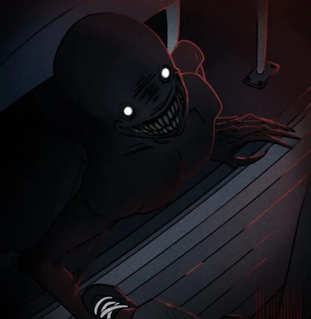

The Phantoms are the primary antagonists of School Bus Graveyard. They are demonic, human‑shaped creatures that relentlessly pursue the main group, first appearing in Episode 1. They are known for their glowing white eyes, permanent wide smiles, and their ability to navigate the Midnight World with frightening speed and aggression.
Phantoms appear completely braindead, lacking higher thought or emotion. Despite this, they demonstrate basic survival instincts such as climbing, chasing, attacking, and reacting to sound. They behave similarly to zombies — driven purely by instinct, aggression, and the urge to hunt. It is unknown whether they eat their victims, as this has never been observed.
Phantoms are thin, human‑like black creatures with sunken, glowing white eyes and a bright, permanent smile. Their bodies appear starved, and they possess long, sharp claws used for climbing and attacking. They react poorly to light and are significantly smaller than the larger Phantom Centipedes.
The Phantoms first appear in Episode 1, chasing the main six through Ashlyn’s backyard and into the school bus graveyard. One manages to climb the walls and infiltrate the area, demonstrating their persistence and agility.